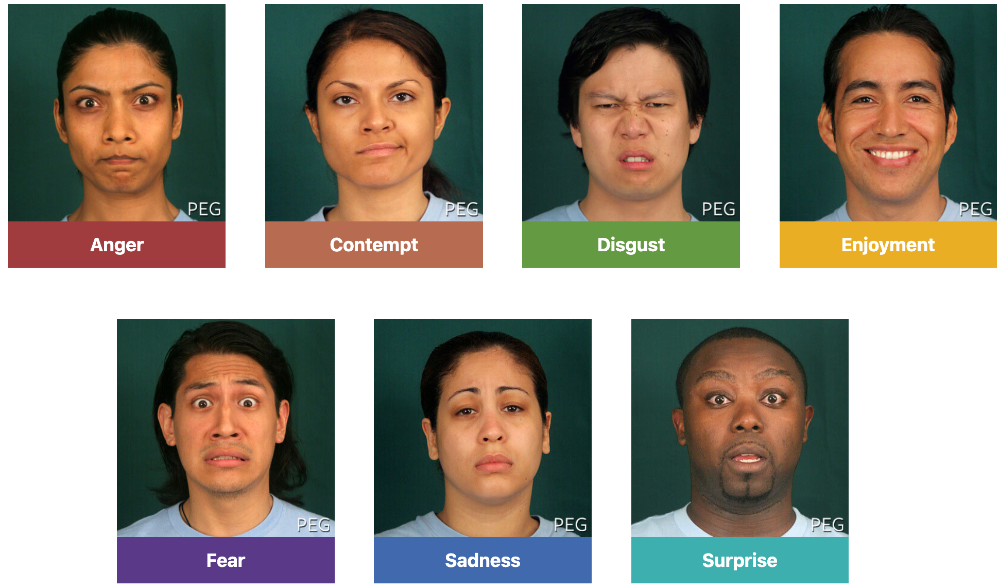
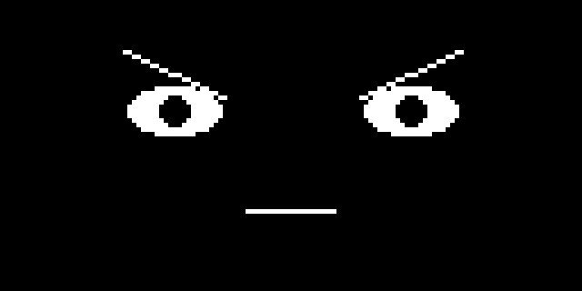
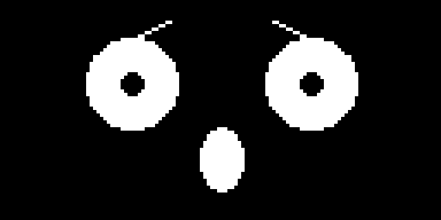
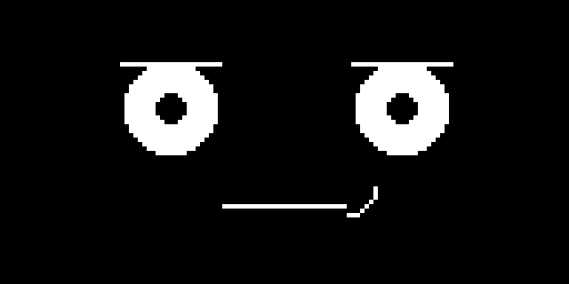

Emotion Types
This project puts a focus on using MicroPython and OLED displays to generate about seven primary emotions.
Here are the seven faces that Paul Ekman describes in his research:
- happy
- sad
- angry
- afraid
- surprise
- disgust
- contempt
The feeling of tired or sleepy can also be shown on a robot's face.
Here are photos of these seven emotions on people:

Seven Faces, One Robot
 Every one of these seven feelings comes from the exact same three parts of a face — eyebrows, eyes, and a mouth — just moved. Let's draw all seven and watch one face turn into seven completely different robots. Every pixel tells a story!
Every one of these seven feelings comes from the exact same three parts of a face — eyebrows, eyes, and a mouth — just moved. Let's draw all seven and watch one face turn into seven completely different robots. Every pixel tells a story!
Inside Out Emotions
The Pixar movie Inside Out focused on only five emotions in its characters:
- Joy
- Sadness
- Fear
- Disgust
- Anger
Emotion Recognition Accuracy
Some of these emotions are easy for people to recognize. Here is this list sorted by confidence take from a table in Emotive Response to a Hybrid-Face Robot and Translation to Consumer Social Robots:
OVERALL EMOTION RECOGNITION ACCURACIES
- Sad: 88%
- Happy: 84.8
- Surprise: 79.6
- Tired: 69.0
- Angry: 68.5
- Disgust: 63.8
- Stern: 59.2
Note that the emotion of contempt was not scored in this paper.
Notice that sad and happy sit at the top of the list, while surprise is not far behind. Afraid does not even appear in this particular study, but other research consistently finds it gets confused with surprise more than any other pair on the list — both expressions share raised eyebrows, wide eyes, and an open mouth, and the difference between them comes down to just how far each feature moves.
Building Blocks: Eyes, Eyebrows, and Mouths
Every one of the seven faces below is built from the same three helper functions, just called with different numbers. Get comfortable with these three functions first, and every expression that follows is just a different set of arguments.
1 2 3 4 5 6 7 8 9 10 11 12 13 14 15 16 17 18 19 20 21 22 23 24 | |
Eyes are a filled circle with a smaller black pupil on top, the same pattern from Basic Face Layouts. The only new idea here is that rx and ry are separate, so an eye can be stretched wide for surprise or squeezed flat for anger.
1 2 3 4 5 6 7 8 | |
Eyebrows use the tilted line() trick from Eyebrows, but wrapped in a function with two new controls: tilt and lift. A positive tilt angles the nose-side end of the eyebrow down, which is what a furrowed, angry brow looks like. A negative tilt raises that same nose-side end up, the shape of a worried or frightened brow. lift just slides the whole eyebrow up or down, independent of its angle.
1 2 3 4 5 6 7 8 9 10 11 | |
Two Numbers, Every Eyebrow Shape

tilt and lift are independent. A steep positive tilt with a low lift reads as furious. That same steep tilt with a high lift would read as something closer to intense focus. Small changes to the same two numbers cover a surprising amount of emotional ground.
Mouths get four different shapes, because a single curved line cannot cover everything from a grin to a gasp. draw_mouth_curve() reuses the quadrant-mask trick from Ellipse and Winking with a Smile — BOTTOM_HALF curves up into a smile, TOP_HALF curves down into a frown. draw_mouth_flat() draws a tight, neutral line. draw_mouth_open() fills a small oval for a startled, open mouth. draw_mouth_smirk() draws a flat line with just one corner curled up, for the subtlest expression in this lesson.
1 2 3 4 5 6 7 8 9 10 11 12 13 14 15 16 17 | |
Drawing the Seven Core Expressions
With those helpers in place, every expression below is a three-line recipe: call draw_eyes(), call draw_eyebrows(), then call one of the mouth functions. Each one starts with oled.fill(BLACK) to clear the previous face and ends with oled.show() to send the new one to the display.
Happy
Happy needs the least effort of any expression here — relaxed, slightly lifted eyebrows, normal round eyes, and a wide smiling mouth. That simplicity is exactly why it topped the recognition chart above: nothing about a happy face is subtle.
1 2 3 4 5 6 | |

Sad
Sad flips happy's mouth from a smile to a frown with TOP_HALF, and adds a gentle negative tilt so each eyebrow's nose-side end lifts slightly — the same "worried" shape from the Basic Face Layouts "Things to Try" section, just kept mild.
1 2 3 4 5 6 | |
Angry
Angry pushes that same eyebrow tilt hard in the opposite direction — a steep positive tilt that drags both nose-side ends down into a furrow, dropped low with a negative lift. The eyes get flattened into a narrow slit instead of a full circle, and the mouth stays a tight, flat line. Anger reads through the eyebrows and eyes here, not the mouth.
1 2 3 4 5 6 | |

Afraid
Afraid raises the eyebrows instead of lowering them, using the same worried tilt direction as sad but much steeper, paired with wide eyes and a small round open mouth from draw_mouth_open(). This is one of the two expressions the accuracy research above warns you about.
1 2 3 4 5 6 | |

Surprised
Surprised is afraid's neighbor in the confusion table above, and the code shows exactly why: nearly the same ingredients — wide eyes, a raised open mouth — pushed to their absolute extreme, with flat (rather than tilted) eyebrows shooting straight up. Every feature moves in the same dramatic direction at once, which is exactly what minimal-feature robot research says makes an expression unmistakable.
1 2 3 4 5 6 | |

Afraid vs. Surprised: Look at the Eyebrows
 Compare the code for afraid and surprised side by side. Afraid's eyebrows are tilted (
Compare the code for afraid and surprised side by side. Afraid's eyebrows are tilted (-5, -5); surprised's are flat but very high (lift=6). On a small display those two brow shapes are the single biggest clue telling the two expressions apart.
Disgusted
Disgusted is the first expression here to deliberately break symmetry — the two eyebrows get different tilt values instead of a matching pair, giving a lopsided, scrunched look. The mouth shifts a few pixels off center and curls into a small frown, like it is pulling away from something.
1 2 3 4 5 6 | |
Contempt
Contempt is the most subtle face in this whole lesson, and Ekman himself considered it a more debated addition to the list. Everything stays close to neutral — level eyebrows, normal round eyes — except one corner of the mouth, which lifts in a small one-sided smirk built by draw_mouth_smirk().
1 2 3 4 5 6 | |

Subtle Can Mean Invisible
 A smirk this small already looks faint on a 128 by 64 display. Shrink
A smirk this small already looks faint on a 128 by 64 display. Shrink MOUTH_Y's offset or the smirk's radius any further and it risks disappearing entirely from a few feet away. When in doubt, exaggerate — a robot face rarely fails by being too expressive.
Putting It All Together
Here is the complete program: every helper function, all seven expressions, and a loop at the bottom that cycles through them the same way Eye Scanner cycled through pupil positions.
1 2 3 4 5 6 7 8 9 10 11 12 13 14 15 16 17 18 19 20 21 22 23 24 25 26 27 28 29 30 31 32 33 34 35 36 37 38 39 40 41 42 43 44 45 46 47 48 49 50 51 52 53 54 55 56 57 58 59 60 61 62 63 64 65 66 67 68 69 70 71 72 73 74 75 76 77 78 79 80 81 82 83 84 85 86 87 88 89 90 91 92 93 94 95 96 97 98 99 100 101 102 103 104 105 106 107 108 109 110 111 112 113 114 115 116 117 118 119 120 121 122 123 124 125 126 127 128 129 130 131 132 133 134 135 136 137 138 139 140 141 142 143 144 145 146 147 148 149 150 151 152 153 154 155 156 | |
Functions Can Live in a List Too
EXPRESSIONS is a list of functions, not a list of numbers or strings. Because Python treats a function name without parentheses as a value, for draw in EXPRESSIONS: draw() calls each one in turn — a compact way to cycle through every expression your robot knows.
Things to Try
- Add a
neutralexpression. Level eyebrows (tilt=0,lift=0), normal round eyes, and a flat mouth — the resting state every other expression here is a deliberate departure from. - Swap disgusted's asymmetric eyebrows onto contempt. Contempt is supposed to stay almost neutral everywhere except the mouth — see how much that one change breaks the subtlety that makes contempt read as contempt.
- Make angry even angrier. Push its
tiltfrom 5 to 10 and dropliftfurther negative, and see how much more intense the same three function calls can look. - Change how long each expression holds in the
EXPRESSIONSloop, from 2 seconds down to 0.5. Notice how a face that changes too quickly stops reading as an emotion and starts reading as a glitch — the same lesson Winking with a Smile taught about timing a wink. - Trigger an expression from a button using what you learned in Blinking, so your robot shows "surprised" only when someone actually startles it.
Seven Feelings, Three Functions

draw_eyes(), draw_eyebrows(), and one mouth function — that's the entire toolkit behind every expression in this lesson. You just proved that a robot doesn't need thirteen different features to feel emotionally readable. It needs three, aimed carefully. Great expression!
References
- MicroPython Framebuf Documentation — the full signatures for
ellipse(),line(), andhline(), including the quadrant mask parameter - Basic Face Layouts — the eye, eyebrow, and mouth proportions this lesson's helper functions build on
- Eyebrows — the tilted-line technique behind
draw_eyebrow() - Ellipse and Winking with a Smile — the quadrant fill codes behind every curved mouth in this lesson
- Eye Scanner — the loop pattern the final
EXPRESSIONScycle reuses - Ekman and Friesen